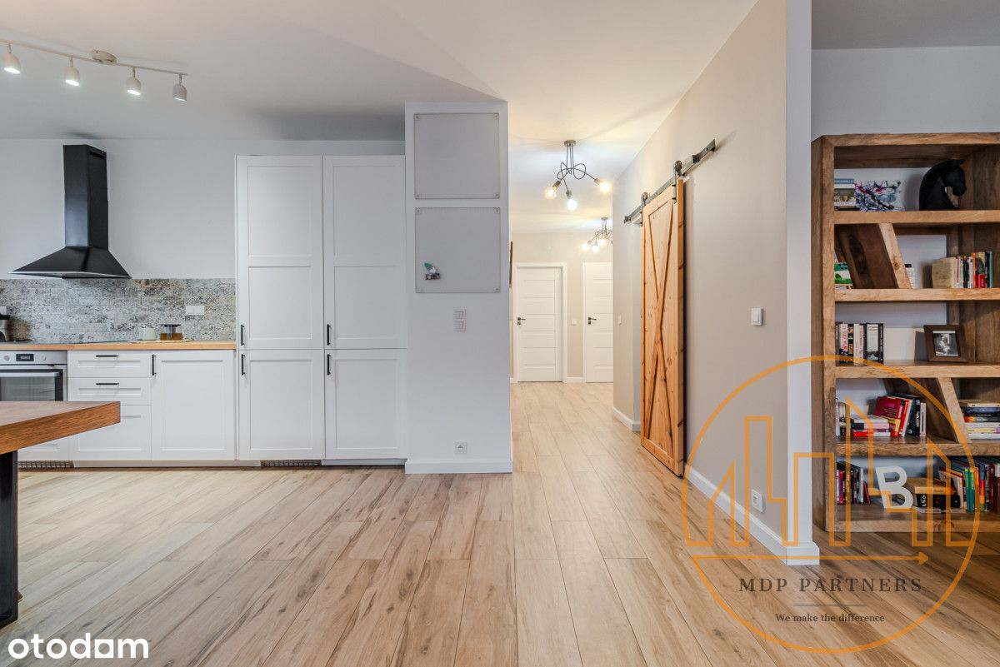
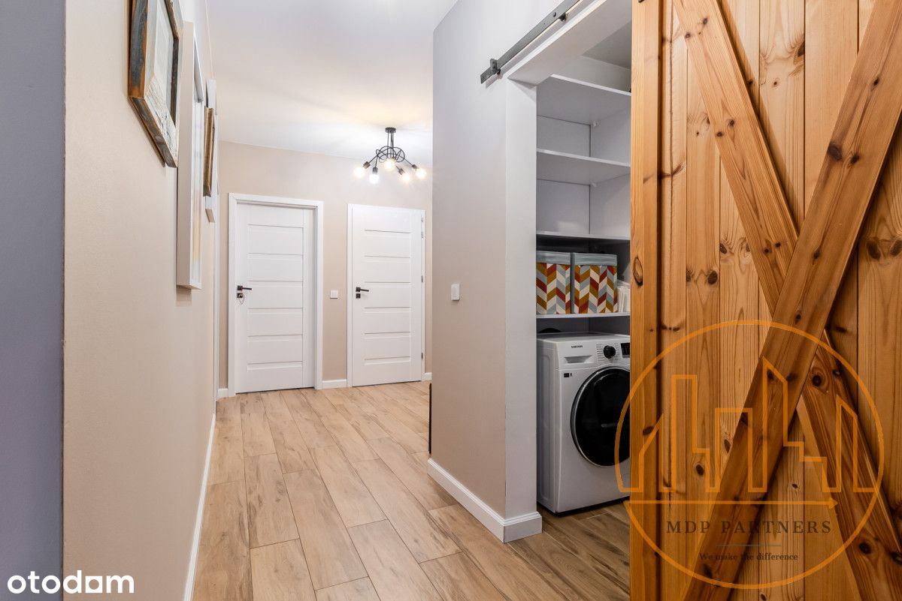
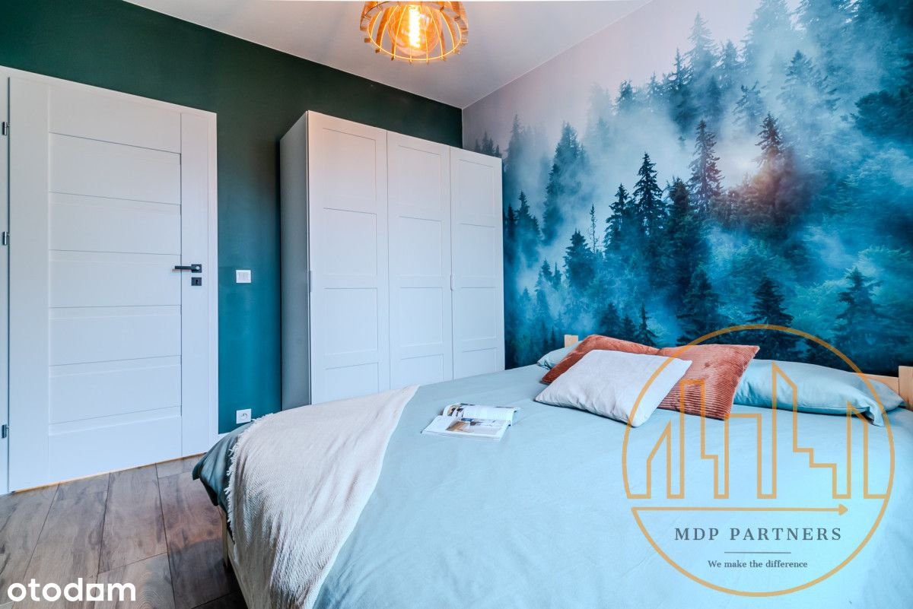
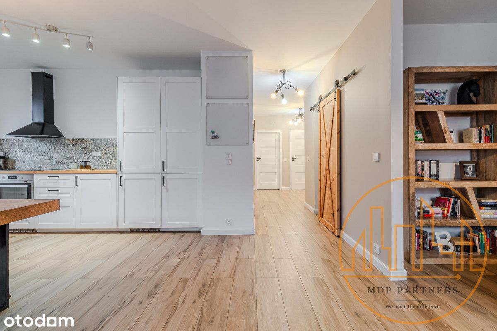
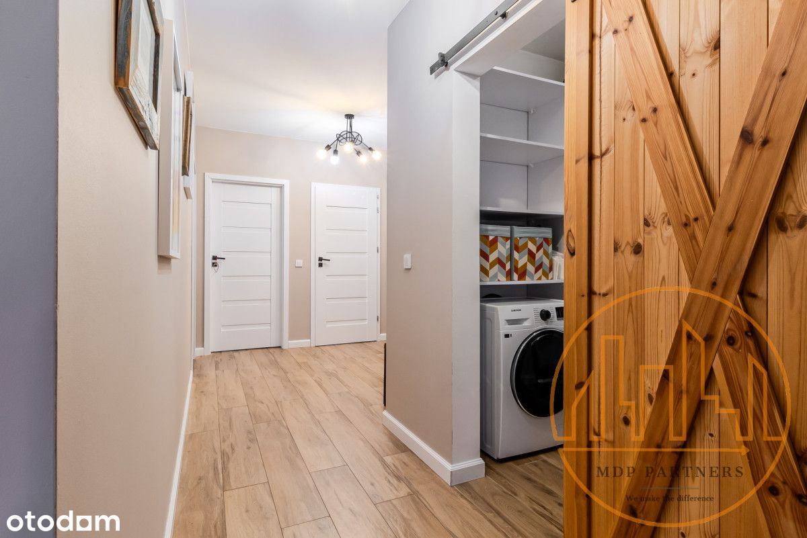
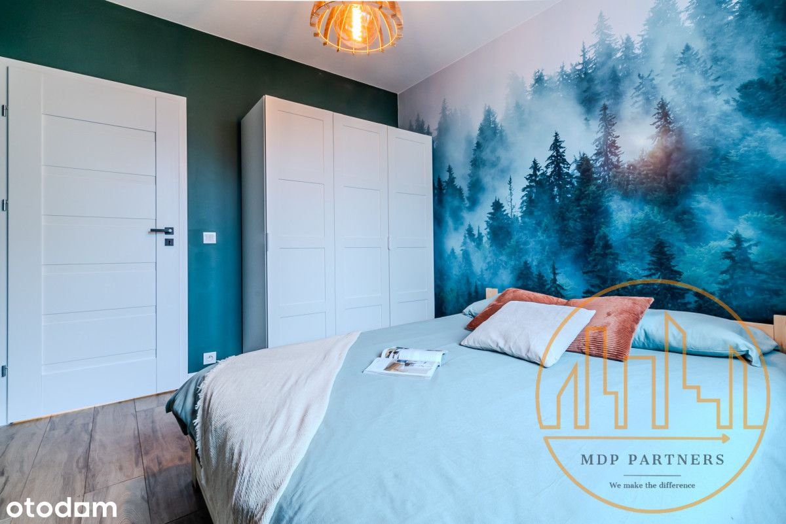

MDP PARTNERS PREZENTUJE
Przestronne, komfortowe i gotowe do wprowadzenia mieszkanie na Warszawskim Targówku.
Nieruchomość wykończona i wyposażona, idealna propozycja dla rodziny.
Lokum usytuowane jest na 1 piętrze 3 piętrowego kameralnego budynku oddanego do użytku w 2020 roku.
Inwestycja zamknięta i monitorowana.
Całkowita powierzchnia mieszkania wynosząca 80 m2 składa się z :
- przestronnego salonu połączonego z otwartą kuchnią. Duża powierzchnia pomieszczenia pozwoliła również na wydzielenie części wypoczynkowej.
- dwóch oddzielnych sypialni,
- łazienki z oknem, dwiema umywalkami i prysznicem typu "walk-in"
- przedpokoju z miejscem na pojemną szafę
- garderoby, wyposażonej w pralko-suszarkę
Dodatkową powierzchnię mieszkania stanowi Loggia.
Do mieszkania przynależy miejsce postojowe w garażu podziemnym ( dodatkowo płatne 40 000 zł ).
Niewątpliwym atutem mieszkania jest jego usytuowanie, okna skierowane są na wschód, zachód oraz północ. Nieruchomość zaaranżowana z myślą o sobie, blaty z litego drewna, gresowa podłoga oraz zróżnicowane i ciepłe światło to czynniki które z pewnością pomogą poczuć ci " ciepło domowego ogniska ".
Pełna własność - mieszkanie z uregulowanym stanem prawnym, możliwość posiłkowania się kredytem hipotecznym.
Lokalizacja :
Osiedle Wilno, to kompleks kameralnej zabudowy, w pobliżu znajdziemy wszystko co potrzebne do komfortowego życia.
Liczne sklepy spożywcze, punkty usługowe oraz restaurację.
Osiedle posiada własną stację kolejową wybudowaną przez Dom Development z której podróż do stacji Metra Dworzec Wileński trwa zaledwie 5 minut, ponadto w pobliżu zlokalizowane są przystanki autobusowe linii 156, 170 oraz 356.
W bliskiej odległości przedszkole publiczne, oraz szkoła podstawowa.
Dla lubiących aktywny wypoczynek Teren spacerowy w Lesie na Utracie.
ZAPRASZAMY NA PREZENTACJĘ !
MDP Partners oferuje nabywcom obsługę prawną transakcji i jej bezpieczną finalizację, oraz pomoc w sfinansowaniu każdego rodzaju nieruchomości.
 
